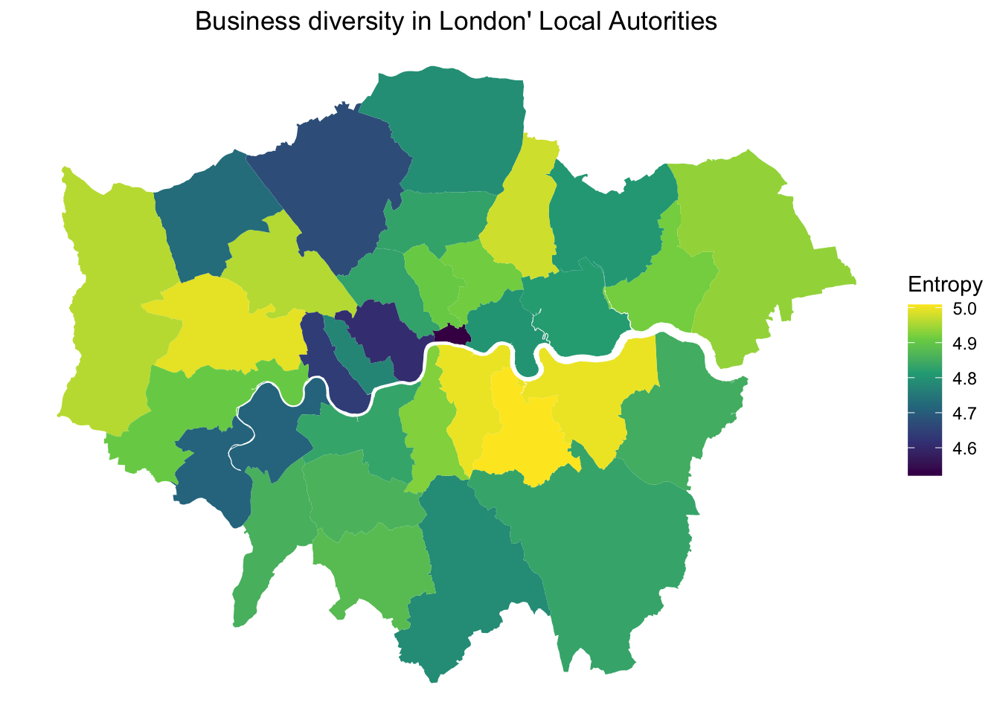
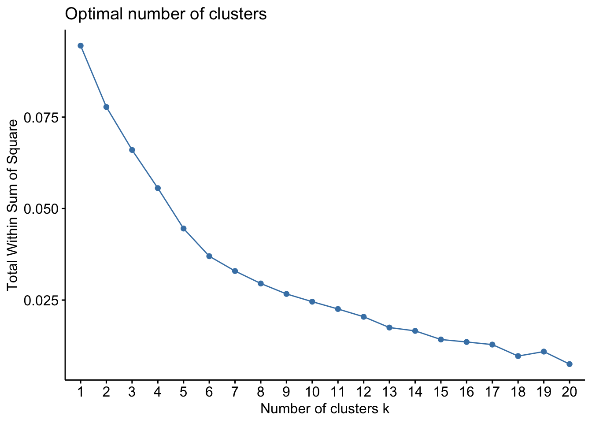
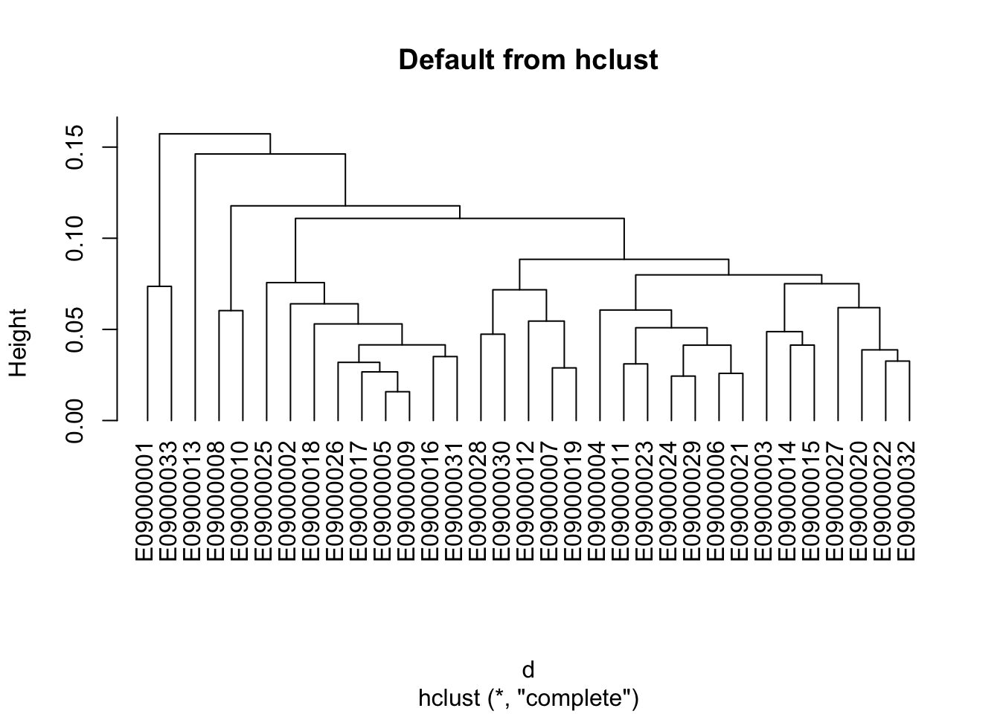
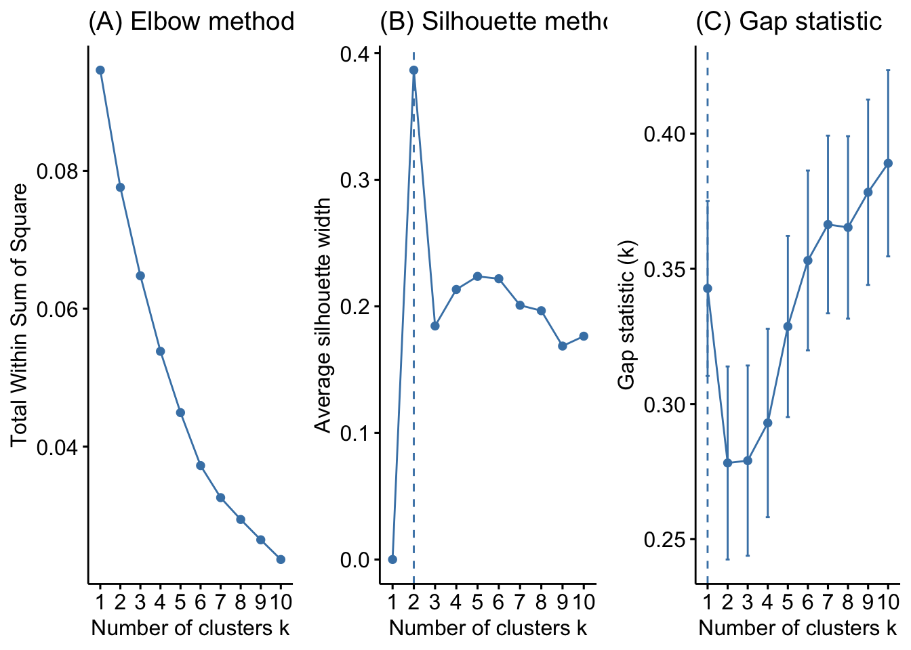
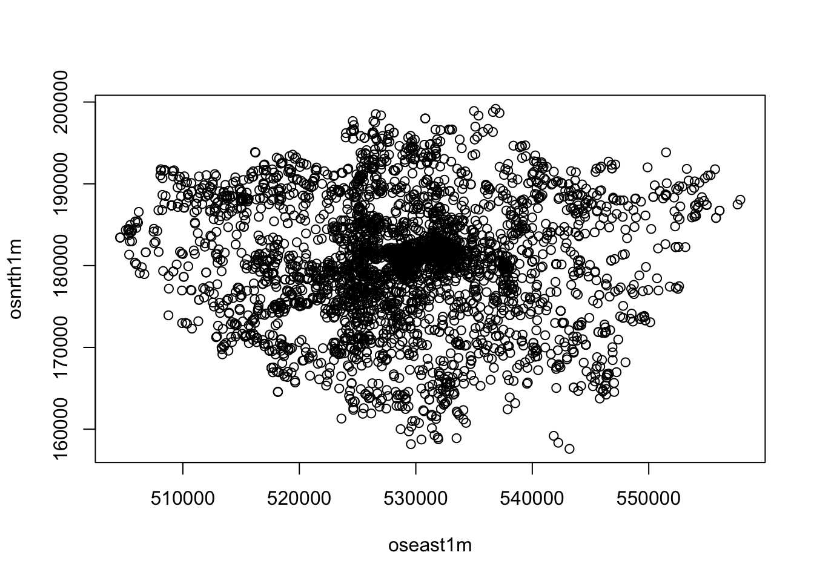
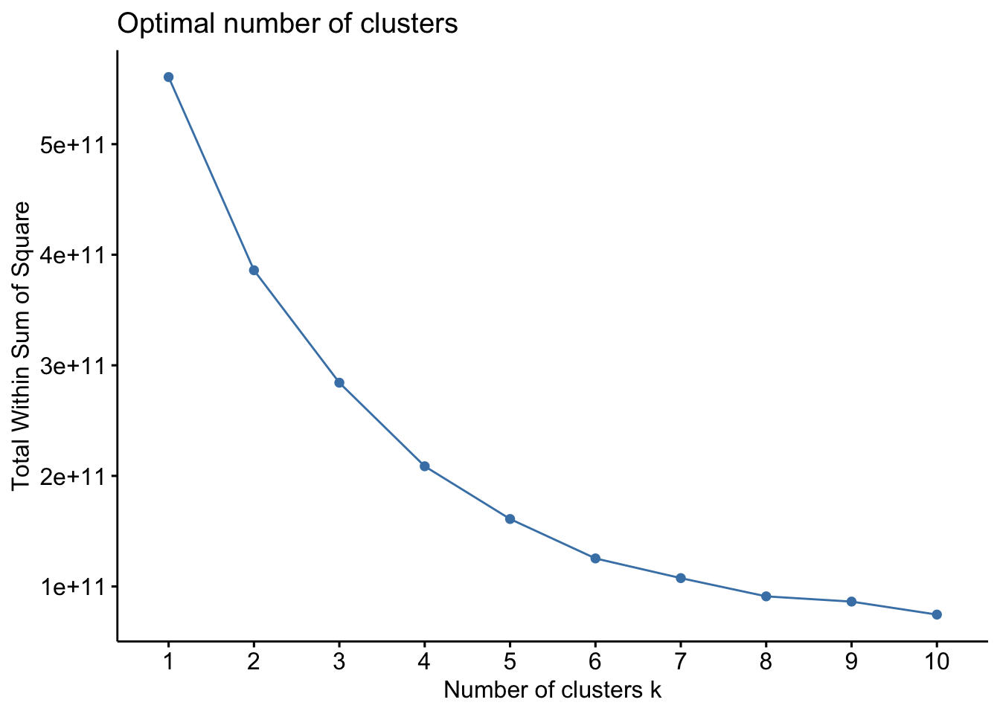
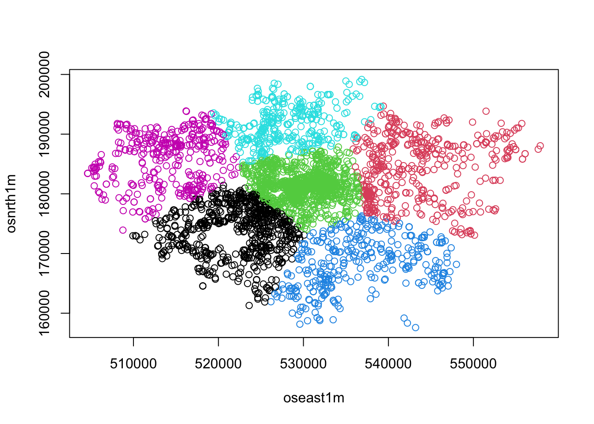
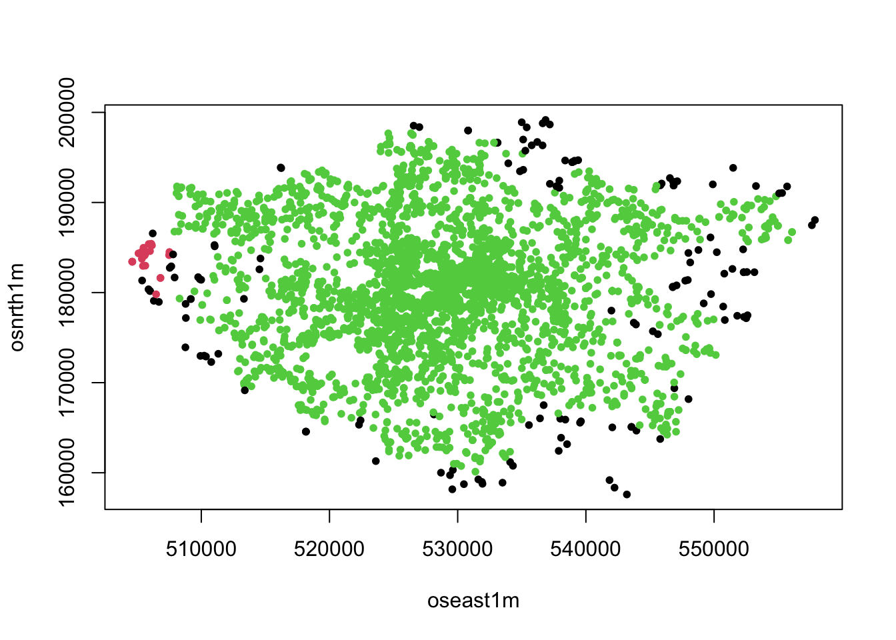

HHI_1 = .8^2 + .05^2 + .05^2 + .1^2
HHI_1[1] 0.655HHI_2 = .25^2 + .25^2 + .25^2 + .25^2
HHI_2[1] 0.25Production, i.e. firms
Consumption, i.e. product variety
Labour pool, i.e. skills in labour market
In general is a good thing for:
urban economies
productivity
urban and industrial agglomeration
Within-sector or Marshall–Arrow–Romer (MAR) spillovers
Between-sector or Jacobs spillovers
Large empirical literature trying to identify the optimal ratio, e.g. Saviotti and Frenken (2008) and Caragliu, Dominicis, and Groot (2016)
MAR externalities (or spillovers): good for productivity and short-term growth
Jacobean externalities: good for innovation and long-term growth
Using more clear economics terminology (Fujita et al. 1989):
Diverse cities (heterogeneous agglomerations) enjoy economies of scope
Homogeneous agglomeration enjoy increasing returns from economies of scale
Ambiguous concepts
Variety, diversity, difference: a relative concept of agglomeration and the clustering of activities
Not only higher ‘abundance’, ‘difference’ or ‘number’, but also the degrees of ‘richness’, ‘concentration’ or ‘evenness’ (Yuo and Tseng 2021)
Different ways to measure (Bettencourt 2021)
… aka variety
\(D = \sum_{i}^n p_{i}^0\)
\(p_i\) is the proportion of data points in the \(i\)th category
\(n\) is the number of total categories
A count of different species / categories / …
Interpretation:
Plurality
Availability of options
\(H = -\sum_{i}^n p_{i} \ln{p_{i}}\)
\(n\) is the number of total categories
\(p_i\) is the proportion of data points in the \(i\)th category
Probably the most common diversity index.
Interpretation:
If one category dominates ➔ less surprise ➔ low entropy
No category dominates ➔ more surprise ➔ high entropy
\(HHI = \sum_{i}^{n}(p_{i}^2)\)
\(p_i\) is the proportion of data points in the \(i\)th category
Concentration of the market.
Interpretation:
\(1/n \leq HHI \leq 1\)
Two scenarios:
HHI_1 = .8^2 + .05^2 + .05^2 + .1^2
HHI_1[1] 0.655HHI_2 = .25^2 + .25^2 + .25^2 + .25^2
HHI_2[1] 0.25Caution: alternative specification
\(HHI = 1- \sum_{i}^{n}(p_{i}^2)\)


Large scale fine-grained data on economic activities
Learn about abstract factors of production and the way they combine into outputs
Dimensionality reduction techniques to data on the geography of activities, e.g. employment by industry or patents by technology
Machine learning and network techniques to predict and explain the economic trajectories of countries, cities and regions
For a review, check Hidalgo (2021) and Balland et al. (2022).
Go to data.london.gov.uk
Download and and save locally the Businesses-in-London.csv
Make sure you know the file location!
We will use the REAT and entropy packages. Check what these packages do here and here.
Install them if needed with install.packages("packagename")
library(tidyverse) # for data wrangling── Attaching core tidyverse packages ──────────────────────── tidyverse 2.0.0 ──
✔ dplyr 1.1.2 ✔ readr 2.1.4
✔ forcats 1.0.0 ✔ stringr 1.5.0
✔ ggplot2 3.4.2 ✔ tibble 3.2.1
✔ lubridate 1.9.2 ✔ tidyr 1.3.0
✔ purrr 1.0.2
── Conflicts ────────────────────────────────────────── tidyverse_conflicts() ──
✖ dplyr::filter() masks stats::filter()
✖ dplyr::lag() masks stats::lag()
ℹ Use the conflicted package (<http://conflicted.r-lib.org/>) to force all conflicts to become errorslibrary(rprojroot) # for relative paths
library(REAT) # for diversity measures
Attaching package: 'REAT'
The following object is masked from 'package:readr':
speclibrary(entropy) # for entropy
library(cluster) # for cluster analysis
library(factoextra) # help functions for clustering Welcome! Want to learn more? See two factoextra-related books at https://goo.gl/ve3WBalibrary(kableExtra) # for nice html tables
Attaching package: 'kableExtra'
The following object is masked from 'package:dplyr':
group_rowslibrary(dbscan) # for HDBSCAL
Attaching package: 'dbscan'
The following object is masked from 'package:stats':
as.dendrogramlibrary(sf) # for mappingLinking to GEOS 3.11.0, GDAL 3.5.3, PROJ 9.1.0; sf_use_s2() is TRUE# This is the project path
path <- find_rstudio_root_file()
path.data <- paste0(path, "/data/businesses-in-london.csv")
london.firms <- read_csv(path.data) Warning: One or more parsing issues, call `problems()` on your data frame for details,
e.g.:
dat <- vroom(...)
problems(dat)Rows: 1403160 Columns: 104
── Column specification ────────────────────────────────────────────────────────
Delimiter: ","
chr (71): CompanyName, CompanyNumber, RegAddress.CareOf, RegAddress.POBox, R...
dbl (19): Accounts.AccountRefDay, Accounts.AccountRefMonth, Mortgages.NumMor...
lgl (14): DissolutionDate, PreviousName_5.CONDATE, PreviousName_5.CompanyNam...
ℹ Use `spec()` to retrieve the full column specification for this data.
ℹ Specify the column types or set `show_col_types = FALSE` to quiet this message.london.firms.sum <- london.firms %>%
filter(SICCode.SicText_1!="None Supplied") %>% # dropping NAs in essence
group_by(oslaua, SICCode.SicText_1) %>% # grouping by Local Authority and SIC code
summarise(n = n()) %>% # summarise: n is the number of firms per Local Authority and SIC code
mutate(total = sum(n), # total equal all firms
freq = n / total) %>% # just a frequency
group_by(oslaua) %>% # grouping again only by Local Authority
summarise(richness = n_distinct(SICCode.SicText_1), # the number of distinct SIC per Local Authority
entropy = entropy(freq, method = "ML"), # entropy for each Local Authority, we did the first group_by() and mutate() to be able to calculate freq so we can calculate entropy
herf = herf(n)) %>% # HHI for each local authority
arrange(-herf) # sort based on HHI (descending)`summarise()` has grouped output by 'oslaua'. You can override using the
`.groups` argument.london.firms.sum %>% kbl() %>%
kable_styling(full_width = F) %>% # A nice(r) table
scroll_box(width = "800px", height = "300px")| oslaua | richness | entropy | herf |
|---|---|---|---|
| E09000013 | 602 | 4.637865 | 0.0301165 |
| E09000001 | 744 | 4.520774 | 0.0288396 |
| E09000033 | 827 | 4.607933 | 0.0258339 |
| E09000003 | 723 | 4.671225 | 0.0233361 |
| E09000008 | 678 | 4.786546 | 0.0221182 |
| E09000027 | 558 | 4.712318 | 0.0220274 |
| E09000015 | 633 | 4.730619 | 0.0205194 |
| E09000010 | 667 | 4.790814 | 0.0204714 |
| E09000007 | 827 | 4.829186 | 0.0204085 |
| E09000020 | 577 | 4.774282 | 0.0196181 |
| E09000030 | 690 | 4.802693 | 0.0193494 |
| E09000025 | 623 | 4.816502 | 0.0188794 |
| E09000032 | 571 | 4.831936 | 0.0184425 |
| E09000026 | 630 | 4.806874 | 0.0180738 |
| E09000012 | 729 | 4.915068 | 0.0178886 |
| E09000014 | 595 | 4.830779 | 0.0178559 |
| E09000019 | 803 | 4.904964 | 0.0178424 |
| E09000006 | 599 | 4.833756 | 0.0177523 |
| E09000021 | 529 | 4.856868 | 0.0176720 |
| E09000004 | 569 | 4.849445 | 0.0176348 |
| E09000024 | 582 | 4.860828 | 0.0168338 |
| E09000018 | 603 | 4.906424 | 0.0163947 |
| E09000029 | 543 | 4.879529 | 0.0162662 |
| E09000022 | 594 | 4.925276 | 0.0157286 |
| E09000017 | 640 | 4.960676 | 0.0153900 |
| E09000005 | 644 | 4.958913 | 0.0146799 |
| E09000016 | 564 | 4.936603 | 0.0145663 |
| E09000028 | 681 | 4.996227 | 0.0145643 |
| E09000002 | 543 | 4.916217 | 0.0143203 |
| E09000009 | 645 | 4.992793 | 0.0142574 |
| E09000031 | 587 | 4.977460 | 0.0136438 |
| E09000011 | 565 | 4.995980 | 0.0136430 |
| E09000023 | 540 | 5.008342 | 0.0130329 |
You don’t know what local authorities these codes refer to. You should download the codes and names and join them with your data from here.
Discuss what we can learn from this exercise.
Can you think of a way to understand how different these indices are among London’s Local Authorities?
path.shape <- paste0(path, "/data/Local_Authority_Districts_(May_2021)_UK_BFE.geojson")
london <- st_read(path.shape, quiet = T) %>%
dplyr::filter(LAD21CD %in% (london.firms$oslaua))
london <- merge(london, london.firms.sum, by.x = "LAD21CD", by.y = "oslaua" )
ggplot() +
geom_sf(data = london, aes(fill = entropy), color = NA) +
labs(
title = "Business diversity in London' Local Autorities",
fill = "Entropy") +
scale_fill_viridis_c() +
theme_void() +
theme(plot.title = element_text(hjust = 0.5)) # centres the title
Reducing the dimensions of the observation space
Classification of observations into (exclusive) groups
Distance or (dis)similarity between each pair of observations to create a distance or dissimilarity or matrix
Observations within the same group are as similar as possible
Plenty of other resources online and in textbooks

k-means
Hierarchical clustering
k is the number of clusters and is pre-defined
The algorithm selects k random observations (starting centres)
The remaining observations are assigned to the nearest centre
Recalculates the new centres
Re-check cluster assignment
Iterative process to minimise within-cluster variation until convergence
\(SS_{within} = \sum_{k=1}^k W(C_{k}) = \sum_{k=1}^k \sum_{x_i\in C_K}(x_i-\mu_k)^2\)
First, create an appropriate data frame
la.sic <- london.firms %>%
filter(SICCode.SicText_1!="None Supplied") %>% # Drop firms which haven't declared SIC code
group_by(oslaua, SICCode.SicText_1) %>% # Group by Local Authorities and SIC code
summarise(n = n()) %>% # Summarise; n = number of observations
mutate(total = sum(n), # New column: total number of observations
freq = n / total) %>% # New column: frequency
arrange(oslaua,-n) %>% # Just arrange by Local Authority and descenting order of n
select(-n, -total) %>% # Drop n and total, we don't need them any more.
pivot_wider(names_from = SICCode.SicText_1, values_from = freq) %>% # Data transformation: from long to wide. Have a look: https://tidyr.tidyverse.org/reference/pivot_wider.html
replace(is.na(.), 0) # Replace any missing values with 0 as missing value represent SIC codes with 0 frequency`summarise()` has grouped output by 'oslaua'. You can override using the
`.groups` argument.la.sic %>%
select(1:20) %>% # Select the first 20 columns as there 1037 in total
kbl() %>%
kable_styling() # Nice(r) table| oslaua | 82990 - Other business support service activities n.e.c. | 64209 - Activities of other holding companies n.e.c. | 70229 - Management consultancy activities other than financial management | 64999 - Financial intermediation not elsewhere classified | 99999 - Dormant Company | 74990 - Non-trading company | 70100 - Activities of head offices | 68209 - Other letting and operating of own or leased real estate | 62020 - Information technology consultancy activities | 68100 - Buying and selling of own real estate | 65120 - Non-life insurance | 96090 - Other service activities n.e.c. | 41100 - Development of building projects | 62012 - Business and domestic software development | 62090 - Other information technology service activities | 35110 - Production of electricity | 64205 - Activities of financial services holding companies | 74909 - Other professional, scientific and technical activities n.e.c. | 65110 - Life insurance |
|---|---|---|---|---|---|---|---|---|---|---|---|---|---|---|---|---|---|---|---|
| E09000001 | 0.1108145 | 0.0606884 | 0.0401823 | 0.0379038 | 0.0363252 | 0.0361787 | 0.0271462 | 0.0261046 | 0.0247376 | 0.0239889 | 0.0239238 | 0.0232403 | 0.0208642 | 0.0198714 | 0.0193018 | 0.0183579 | 0.0161282 | 0.0155586 | 0.0117829 |
| E09000002 | 0.0270344 | 0.0027363 | 0.0241340 | 0.0024626 | 0.0061840 | 0.0026816 | 0.0013681 | 0.0173480 | 0.0254474 | 0.0313030 | 0.0001095 | 0.0348602 | 0.0163629 | 0.0068954 | 0.0107262 | 0.0000547 | 0.0004378 | 0.0078258 | 0.0000547 |
| E09000003 | 0.0600694 | 0.0131911 | 0.0403222 | 0.0081328 | 0.0314536 | 0.0152407 | 0.0037313 | 0.0658109 | 0.0258041 | 0.0686751 | 0.0003942 | 0.0442374 | 0.0313223 | 0.0093678 | 0.0109181 | 0.0010511 | 0.0012876 | 0.0106816 | 0.0003022 |
| E09000004 | 0.0714510 | 0.0073915 | 0.0429860 | 0.0039316 | 0.0150975 | 0.0074963 | 0.0025163 | 0.0291466 | 0.0347033 | 0.0404173 | 0.0004718 | 0.0300377 | 0.0214406 | 0.0071818 | 0.0114280 | 0.0004194 | 0.0004194 | 0.0112183 | 0.0001573 |
| E09000005 | 0.0357725 | 0.0060626 | 0.0302829 | 0.0057610 | 0.0234964 | 0.0061229 | 0.0027749 | 0.0451228 | 0.0273572 | 0.0451529 | 0.0002111 | 0.0339326 | 0.0193039 | 0.0080533 | 0.0110394 | 0.0003318 | 0.0006937 | 0.0120951 | 0.0000603 |
| E09000006 | 0.0475336 | 0.0079285 | 0.0482441 | 0.0065073 | 0.0258798 | 0.0078537 | 0.0035529 | 0.0407644 | 0.0376977 | 0.0391937 | 0.0012716 | 0.0269270 | 0.0253562 | 0.0119675 | 0.0129773 | 0.0002618 | 0.0007854 | 0.0157448 | 0.0001870 |
| E09000007 | 0.0541925 | 0.0147704 | 0.0451042 | 0.0091985 | 0.0176188 | 0.0095582 | 0.0063354 | 0.0248425 | 0.0352450 | 0.0353404 | 0.0002790 | 0.0431734 | 0.0260612 | 0.0269274 | 0.0163561 | 0.0019454 | 0.0036706 | 0.0121643 | 0.0001688 |
| E09000008 | 0.0358566 | 0.0042869 | 0.0328511 | 0.0057082 | 0.0886745 | 0.0097621 | 0.0027492 | 0.0308940 | 0.0316861 | 0.0352275 | 0.0002563 | 0.0260246 | 0.0205261 | 0.0105543 | 0.0156800 | 0.0003728 | 0.0027026 | 0.0091098 | 0.0002097 |
| E09000009 | 0.0325698 | 0.0062051 | 0.0333419 | 0.0044036 | 0.0177290 | 0.0084928 | 0.0036602 | 0.0394327 | 0.0277087 | 0.0445226 | 0.0002002 | 0.0352864 | 0.0220468 | 0.0095222 | 0.0106374 | 0.0002860 | 0.0011152 | 0.0100369 | 0.0000858 |
| E09000010 | 0.0361647 | 0.0106993 | 0.0303793 | 0.0056159 | 0.0855462 | 0.0089807 | 0.0024207 | 0.0462347 | 0.0218102 | 0.0379076 | 0.0004115 | 0.0357532 | 0.0213987 | 0.0127811 | 0.0115466 | 0.0002421 | 0.0017913 | 0.0091501 | 0.0002421 |
| E09000011 | 0.0352018 | 0.0036909 | 0.0420300 | 0.0038754 | 0.0134717 | 0.0044752 | 0.0021223 | 0.0251903 | 0.0373702 | 0.0333564 | 0.0003691 | 0.0352480 | 0.0183622 | 0.0120877 | 0.0130104 | 0.0004614 | 0.0014302 | 0.0120415 | 0.0000923 |
| E09000012 | 0.0512285 | 0.0097657 | 0.0496767 | 0.0063622 | 0.0329695 | 0.0031242 | 0.0022862 | 0.0412559 | 0.0384524 | 0.0476801 | 0.0002897 | 0.0205038 | 0.0148865 | 0.0235245 | 0.0167486 | 0.0015621 | 0.0025449 | 0.0118450 | 0.0000621 |
| E09000013 | 0.0423722 | 0.0123893 | 0.0448190 | 0.0076899 | 0.0190306 | 0.0101755 | 0.0087774 | 0.1304179 | 0.0213220 | 0.0310704 | 0.0001554 | 0.0332453 | 0.0167780 | 0.0116126 | 0.0129719 | 0.0013982 | 0.0015147 | 0.0148361 | 0.0000388 |
| E09000014 | 0.0339895 | 0.0056534 | 0.0407460 | 0.0045848 | 0.0256127 | 0.0055500 | 0.0031370 | 0.0527423 | 0.0272674 | 0.0578096 | 0.0001379 | 0.0438829 | 0.0167879 | 0.0113758 | 0.0085491 | 0.0003792 | 0.0009307 | 0.0091696 | 0.0000345 |
| E09000015 | 0.0486010 | 0.0124162 | 0.0466257 | 0.0083570 | 0.0189498 | 0.0074019 | 0.0031692 | 0.0576744 | 0.0423495 | 0.0634049 | 0.0002605 | 0.0342313 | 0.0266123 | 0.0127418 | 0.0140876 | 0.0002171 | 0.0012373 | 0.0184940 | 0.0001954 |
| E09000016 | 0.0449873 | 0.0058253 | 0.0335324 | 0.0070981 | 0.0186019 | 0.0052379 | 0.0017623 | 0.0327981 | 0.0270217 | 0.0414137 | 0.0008811 | 0.0315743 | 0.0251126 | 0.0092520 | 0.0097415 | 0.0000979 | 0.0009301 | 0.0105248 | 0.0000979 |
| E09000017 | 0.0340671 | 0.0094125 | 0.0317595 | 0.0047062 | 0.0160012 | 0.0068316 | 0.0052528 | 0.0389252 | 0.0357674 | 0.0526188 | 0.0003036 | 0.0352513 | 0.0235616 | 0.0123273 | 0.0135722 | 0.0002429 | 0.0015181 | 0.0123577 | 0.0002429 |
| E09000018 | 0.0348997 | 0.0088552 | 0.0347881 | 0.0054322 | 0.0130223 | 0.0102690 | 0.0069576 | 0.0298396 | 0.0549540 | 0.0416341 | 0.0002232 | 0.0361275 | 0.0193474 | 0.0161848 | 0.0141385 | 0.0004093 | 0.0013766 | 0.0104178 | 0.0001488 |
| E09000019 | 0.0509646 | 0.0133515 | 0.0490896 | 0.0090981 | 0.0198825 | 0.0094630 | 0.0062919 | 0.0248783 | 0.0370846 | 0.0317616 | 0.0005537 | 0.0470006 | 0.0223615 | 0.0277725 | 0.0190771 | 0.0017617 | 0.0040646 | 0.0131753 | 0.0002139 |
| E09000020 | 0.0499206 | 0.0187149 | 0.0547281 | 0.0133494 | 0.0227926 | 0.0141649 | 0.0104735 | 0.0411641 | 0.0188866 | 0.0365712 | 0.0002575 | 0.0403056 | 0.0202601 | 0.0148517 | 0.0121475 | 0.0031335 | 0.0041207 | 0.0146371 | 0.0000000 |
| E09000021 | 0.0478516 | 0.0081613 | 0.0512695 | 0.0039063 | 0.0151367 | 0.0095564 | 0.0043248 | 0.0353655 | 0.0399693 | 0.0358538 | 0.0006975 | 0.0272740 | 0.0177176 | 0.0142997 | 0.0145787 | 0.0002790 | 0.0014648 | 0.0150670 | 0.0002790 |
| E09000022 | 0.0335485 | 0.0086577 | 0.0420129 | 0.0044448 | 0.0180111 | 0.0090055 | 0.0052951 | 0.0372976 | 0.0252773 | 0.0306497 | 0.0001546 | 0.0331620 | 0.0143006 | 0.0117497 | 0.0112472 | 0.0028215 | 0.0009276 | 0.0134890 | 0.0000773 |
| E09000023 | 0.0320543 | 0.0035557 | 0.0378921 | 0.0041925 | 0.0113570 | 0.0044579 | 0.0016982 | 0.0268535 | 0.0312583 | 0.0294008 | 0.0000531 | 0.0311522 | 0.0145412 | 0.0110917 | 0.0118877 | 0.0001061 | 0.0013268 | 0.0110917 | 0.0000531 |
| E09000024 | 0.0354735 | 0.0083443 | 0.0490793 | 0.0051381 | 0.0251973 | 0.0069878 | 0.0037817 | 0.0349803 | 0.0517511 | 0.0415571 | 0.0005344 | 0.0318563 | 0.0206347 | 0.0218267 | 0.0152088 | 0.0011098 | 0.0009865 | 0.0107284 | 0.0001644 |
| E09000025 | 0.0443489 | 0.0029330 | 0.0243489 | 0.0040202 | 0.0653097 | 0.0060430 | 0.0018710 | 0.0201770 | 0.0310999 | 0.0305689 | 0.0001517 | 0.0287737 | 0.0136030 | 0.0141087 | 0.0113780 | 0.0001264 | 0.0010619 | 0.0068015 | 0.0001517 |
| E09000026 | 0.0483713 | 0.0060341 | 0.0313726 | 0.0041454 | 0.0177836 | 0.0118475 | 0.0019133 | 0.0443240 | 0.0351011 | 0.0608320 | 0.0003434 | 0.0384615 | 0.0226403 | 0.0095418 | 0.0106211 | 0.0001962 | 0.0008830 | 0.0094192 | 0.0001472 |
| E09000027 | 0.0492061 | 0.0080081 | 0.0828589 | 0.0082396 | 0.0301810 | 0.0121742 | 0.0049067 | 0.0392075 | 0.0431422 | 0.0453641 | 0.0007406 | 0.0244410 | 0.0208767 | 0.0152294 | 0.0154145 | 0.0006018 | 0.0010647 | 0.0200435 | 0.0002314 |
| E09000028 | 0.0530189 | 0.0184414 | 0.0437391 | 0.0094275 | 0.0362030 | 0.0226084 | 0.0137424 | 0.0285782 | 0.0310016 | 0.0226084 | 0.0004433 | 0.0282235 | 0.0125307 | 0.0165204 | 0.0143630 | 0.0043148 | 0.0039306 | 0.0142152 | 0.0001773 |
| E09000029 | 0.0425879 | 0.0045226 | 0.0459799 | 0.0059673 | 0.0157663 | 0.0069724 | 0.0035176 | 0.0339824 | 0.0466080 | 0.0415829 | 0.0005025 | 0.0298995 | 0.0246859 | 0.0138191 | 0.0140704 | 0.0002513 | 0.0020101 | 0.0120603 | 0.0000628 |
| E09000030 | 0.0652078 | 0.0159285 | 0.0484445 | 0.0199271 | 0.0342956 | 0.0172467 | 0.0089199 | 0.0253977 | 0.0509271 | 0.0293084 | 0.0007250 | 0.0367343 | 0.0160603 | 0.0187187 | 0.0393927 | 0.0019554 | 0.0097109 | 0.0105457 | 0.0001977 |
| E09000031 | 0.0310170 | 0.0067606 | 0.0308121 | 0.0036876 | 0.0120052 | 0.0036057 | 0.0014750 | 0.0304024 | 0.0251168 | 0.0375727 | 0.0002049 | 0.0402360 | 0.0259772 | 0.0095059 | 0.0092190 | 0.0006556 | 0.0009424 | 0.0093420 | 0.0000410 |
| E09000032 | 0.0381731 | 0.0072472 | 0.0655832 | 0.0074624 | 0.0180461 | 0.0091845 | 0.0041976 | 0.0402540 | 0.0311771 | 0.0355900 | 0.0003946 | 0.0311771 | 0.0202346 | 0.0123417 | 0.0119470 | 0.0008969 | 0.0018297 | 0.0158935 | 0.0000359 |
| E09000033 | 0.0871492 | 0.0369990 | 0.0475242 | 0.0180250 | 0.0727706 | 0.0228702 | 0.0137720 | 0.0385974 | 0.0192951 | 0.0375056 | 0.0004424 | 0.0307623 | 0.0292781 | 0.0150850 | 0.0143358 | 0.0047239 | 0.0074997 | 0.0153490 | 0.0001570 |
kclust = kmeans(la.sic[,-1], centers = 10, nstart = 10) # be aware of the [,-1]
str(kclust)List of 9
$ cluster : int [1:33] 6 10 5 9 10 4 8 1 10 1 ...
$ centers : num [1:10, 1:1036] 0.036 0.0443 0.0591 0.0444 0.0476 ...
..- attr(*, "dimnames")=List of 2
.. ..$ : chr [1:10] "1" "2" "3" "4" ...
.. ..$ : chr [1:1036] "82990 - Other business support service activities n.e.c." "64209 - Activities of other holding companies n.e.c." "70229 - Management consultancy activities other than financial management" "64999 - Financial intermediation not elsewhere classified" ...
$ totss : num 0.0945
$ withinss : num [1:10] 0.00182 0 0.00112 0.0042 0.00194 ...
$ tot.withinss: num 0.0235
$ betweenss : num 0.071
$ size : int [1:10] 2 1 2 6 3 2 1 3 5 8
$ iter : int 3
$ ifault : int 0
- attr(*, "class")= chr "kmeans"centers is 10 x 1036: 1036 is the number of SIC codes.
Rule of thumb: \(k = \sqrt{n/2}\)
The elbow method
Compute k-means clustering for different values of k
Calculate \(SS_{within}\)
Plot and spot the loction of a bend
fviz_nbclust(
la.sic[,-1],
kmeans,
k.max = 20,
method = "wss"
)

Source: @boehmke2019hands
Agglomerative clustering (AGNES – AGglomerative NESting)
Divisive hierarchical clustering (DIANA – DIvise ANAlysis)
Dissimilarity (distance) of observations
# distances between observations
d <- dist(la.sic)Warning in dist(la.sic): NAs introduced by coercion# creates labels for the dendrogam
l <- london.firms %>% distinct(oslaua) %>% arrange(oslaua)
hclust = hclust(d)
plot(hclust, hang=-1, labels=l$oslaua, main='Default from hclust') 
#hang: the fraction of the plot height by which labels should hang below the rest of the plot. A negative value will cause the labels to hang down from 0.p1 <- fviz_nbclust(la.sic, FUN = hcut,
method = "wss",
k.max = 10) +
ggtitle("(A) Elbow method")Warning in stats::dist(x): NAs introduced by coercionWarning in stats::dist(x, method = method, ...): NAs introduced by coercion
Warning in stats::dist(x, method = method, ...): NAs introduced by coercion
Warning in stats::dist(x, method = method, ...): NAs introduced by coercion
Warning in stats::dist(x, method = method, ...): NAs introduced by coercion
Warning in stats::dist(x, method = method, ...): NAs introduced by coercion
Warning in stats::dist(x, method = method, ...): NAs introduced by coercion
Warning in stats::dist(x, method = method, ...): NAs introduced by coercion
Warning in stats::dist(x, method = method, ...): NAs introduced by coercion
Warning in stats::dist(x, method = method, ...): NAs introduced by coercion
Warning in stats::dist(x, method = method, ...): NAs introduced by coercionp2 <- fviz_nbclust(la.sic, FUN = hcut,
method = "silhouette",
k.max = 10) +
ggtitle("(B) Silhouette method")Warning in stats::dist(x): NAs introduced by coercion
Warning in stats::dist(x): NAs introduced by coercion
Warning in stats::dist(x): NAs introduced by coercion
Warning in stats::dist(x): NAs introduced by coercion
Warning in stats::dist(x): NAs introduced by coercion
Warning in stats::dist(x): NAs introduced by coercion
Warning in stats::dist(x): NAs introduced by coercion
Warning in stats::dist(x): NAs introduced by coercion
Warning in stats::dist(x): NAs introduced by coercion
Warning in stats::dist(x): NAs introduced by coercionp3 <- fviz_nbclust(la.sic[-1], FUN = hcut,
method = "gap_stat",
k.max = 10) +
ggtitle("(C) Gap statistic")
# Display plots side by side
gridExtra::grid.arrange(p1, p2, p3, nrow = 1)
Explore what the 2 cluster solution tells us about London?
hc5 <- hclust(d, method = "ward.D2" )
dend_plot <- fviz_dend(hclust)
dend_data <- attr(dend_plot, "dendrogram")
dend_cuts <- cut(dend_data, h = .15)
fviz_dend(dend_cuts$lower[[2]])
sub_grp <- cutree(hclust, k = 2)
table(sub_grp)
fviz_dend(
hclust,
k = 2,
horiz = TRUE,
rect = TRUE,
rect_fill = TRUE,
rect_border = "jco",
k_colors = "jco",
cex = 0.1
)# This will build an SIC frequency table
london.firms %>%
group_by(SICCode.SicText_1) %>%
summarise(n=n()) %>%
arrange(-n) %>%
glimpse()Rows: 1,037
Columns: 2
$ SICCode.SicText_1 <chr> "82990 - Other business support service activities n…
$ n <int> 72756, 58526, 55309, 52058, 46572, 45312, 44270, 439…london.firms.sample <- london.firms %>%
filter(SICCode.SicText_1=="70221 - Financial management") %>%
select(oseast1m, osnrth1m) %>%
drop_na() plot(london.firms.sample)
fviz_nbclust(
london.firms.sample,
kmeans,
k.max = 10,
method = "wss"
)
sp.cluster = kmeans(london.firms.sample, 6)
plot(london.firms.sample, col = sp.cluster$cluster)
Transform the space according to the density/sparsity
Build the minimum spanning tree of the distance weighted graph
Construct a cluster hierarchy of connected components
Condense the cluster hierarchy based on minimum cluster size
Extract the stable clusters from the condensed tree.
Resources: SciKit-learn docs and dbscan package
cl <- hdbscan(london.firms.sample,
minPts = 10) #minimum size of clusters
plot(london.firms.sample, col=cl$cluster+1, pch=20)